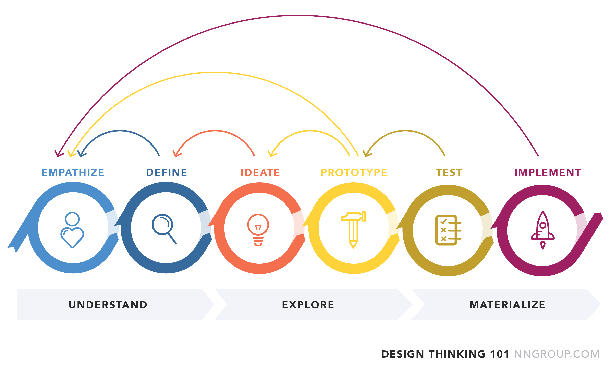

Hvad er Design Thinking, og hvorfor er det vigigt?
Når vi som multimediedesignere går i gang med et projekt - er det vigtigt for os at gå i gennem en Design Thinking process. Dette giver os en bedre forståelse af, hvordan processen kommer til at forløbe, og hvordan vores arbejde fordeles over den tid, vi har til rådighed.
Design Thinking processen er delt op i nogle forskellige faser:
I denne fase er vi nysgerrige. Vi samler viden fra et hav af forskellige kilder - som vi så efterfølgende skaber et overblik over. Når vi 'emphasizer' lytter vi til reelle problemstillinger i verdenen, som vi ønsker at se løsninger på. Det er også i denne fase, at vi som gruppe smider idéløse emner på brainstormen. Det er her vigtigt, at vi ikke sætter os fast på en konkret idé - eftersom vi som mennesker er tilbøjelige til at udelukke andre foreslag, hvis vi har fastsat os på én specifik idé. Derfor skriver vi eventuelle ideer ned - og kigger på dem i 3. fase.
For at nå til denne fase, har vi opnået et overblik over den mængde af data vi fik i Emphasize fasen. Nu skal vi så definere en eller flere konkrete problmstillinger, som er relevante for os at arbejde videre med. Vi fokuserer endnu ikke på at løse problemerne - men på at finde dem. Eventuelle ideer som dukker op her, gemmer vi til næste fase.
Så er tiden inde, og vi er noget til den fase, vi længe har ventet - nemlig ideudviklings fasen. På dette tidspunkt sidder vi højt sansynligt med flere ideer, som skal uddebateres. Vi skal i en gruppe være enige om, hvilke ideer som har mest relevans, og vi skal derfor ikke udlukke nogle ideer fra starten. Når vi er blevet enige om, hvilken idé som releterer sig bedst til vores problemstilling - kan vi begynde at arbejde på løsninger.
Vi har nu en fast idé og løsning på vores problemstilling. Så skal der bare designes, klippes og klistres. En prototype skal kreeres - dette kan bogstavligtalt være i form af pap, papir og tegninger eller andet. En reel plan for farvebrug og typografi skal være på plads. Vi er i denne fase ikke i tvivl om den 'følelse', vores produkt skal fremføre. Det er vigtigt at skitsere mange gange, før man laver sin reele prototype, da vi i næste fase skal have denne prototype testet.
Den femte fase er sandhedens time. Det er her vi kommer ud til folk med det, vi har kreeret. Vi beder dem benytte sig af vores prototype - og får deres ærlige meninger og holdninger til den. Det er som oftest her, at vi i gruppen finder ud af de visse mangler, vi nu må have - og ikke mindst om store dele af vores prototype skal laves om.
I denne sidste fase skal vi forberede os til en samtale med eventuelle investorer. Vi skal forberede en salgs pitch for vores idé - og her gerne kunne sublimentere med evt. løsninger på vores udfordringer.
Kilde: Interfacedesign - Morten Rold